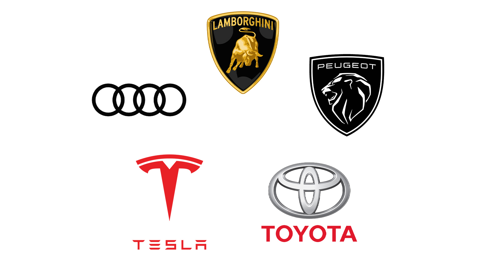

¿Quin avantatge té utilitzar picture per a direcció d’art en comparació amb srcset?
Picture a diferencia de srcset permite tener un mayor control ya que se puede especificar exactamente que imagen mostrara el navegador tras cierta condicion especificada en el atributo de media. Y el img es la imagen que mostrara el navegador en caso de que ninguna condicion se cumpla.